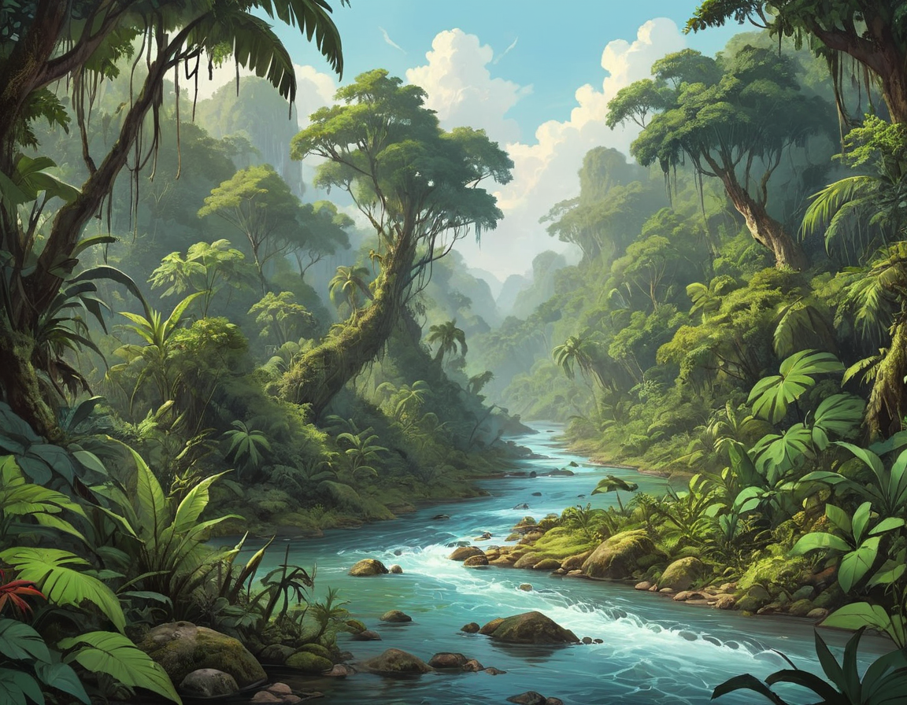
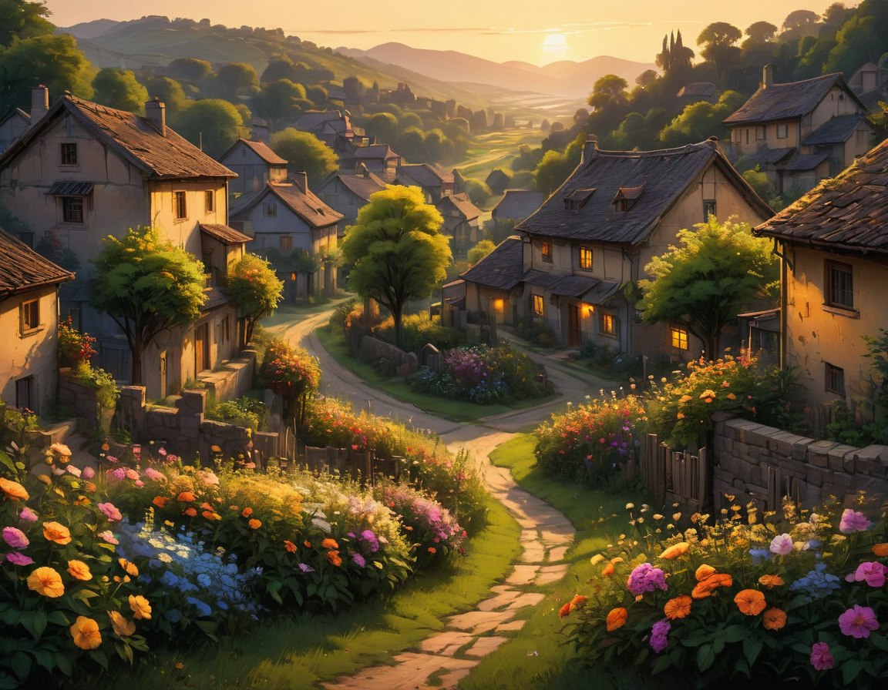
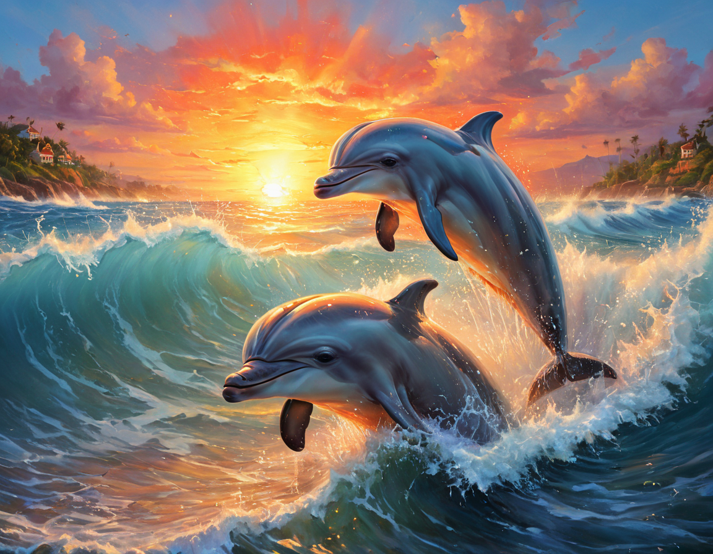
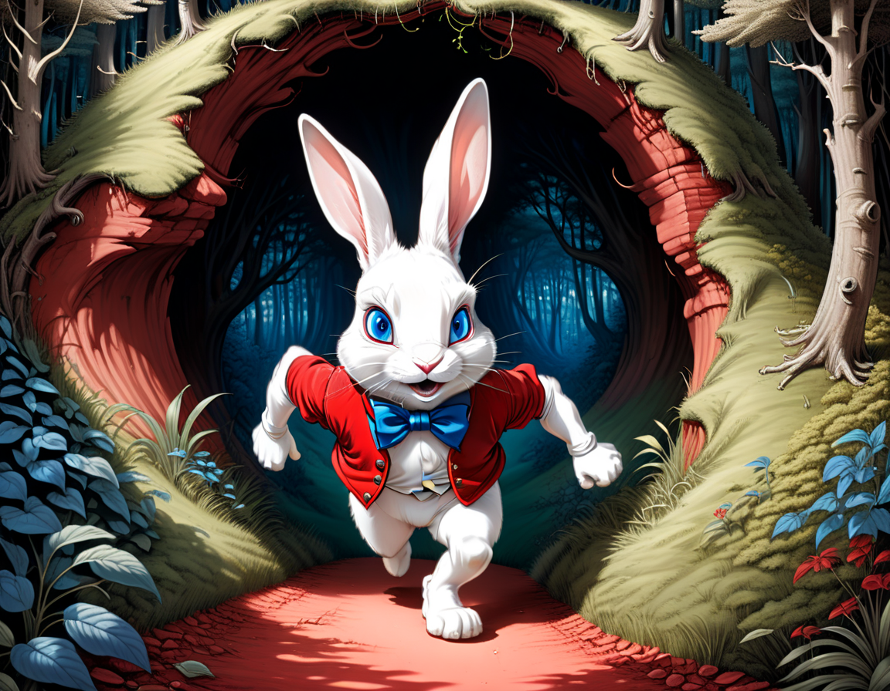

| Ноды для ComfyUI | промпты | метадата | изображение |
|
Ноды. Eff. Loader SDXL KSampler SDXL (Eff.) LoRA Stacker ImpactWildcardProcessor HighRes-Fix Script Image Save |
|||
|
Ноды. Global Seed (Inspire) Image Save |
positive: a caribbean river flowing through a
unexplored ecosystem, overgrown, jungle,
digital painting, fantasy landscape,
negative: text, watermark, |
model: CHEYENNE_v16 VAE: sdxl_vae LoRA: inkArtXL_1.2: 0.5 steps: 25 cfg: 5.0 sampler: dpmpp_2m scheduler: karras seed: 2504429663 |
 1152x896 |
|
Ноды. Global Seed (Inspire) Image Save |
positive: a village, somber, mellow, atmospheric,
golden hour light, blooming flowers,
calm, intricate, depth of field, deep colors,
negative: text, watermark, |
model: SDXLFaetastic_v24 VAE: sdxl_vae LoRA: EldritchComicsXL1.2: 0.5 LoRA: SDXLFaeTastic2400: 0.5 steps: 20 cfg: 4.0 sampler: dpmpp_2m scheduler: karras seed: 2882461285 |
 1152x896 |
|
Ноды. Global Seed (Inspire) Image Save |
positive: summer, oil painting, cute dolphins, crashing wave, sunrise,
adorable, vintage, art, fairytale, ultra highly detailed,
mystical, luminism, vibrant colors, complex background, atmospheric lighting,
negative: text, watermark, signature, |
model: Juggernaut_XL_v9 VAE: sdxl_vae LoRA: xl_more_art-full_v1: 0.5 steps: 20 cfg: 4.0 sampler: dpmpp_2m scheduler: karras seed: 1933522074 |
 1152x896 |
|
Ноды. Global Seed (Inspire) Image Save |
positive: 1white running anthropomorphic rabbit (with blue eyes:1.15),
with a red vest, (background a rabbit hole:1.4), in a forest,
from Alice in Wonderland, art by John Tenniel, rim light, ink art, line art, extremely detailed,
negative: text, watermark, rabbits, clocks, |
model: realcartoonXL_v6 VAE: sdxl_vae LoRA: xl_more_art-full_v1: 0.5 steps: 25 cfg: 8.0 sampler: euler scheduler: normal seed: 312557323 |
 1152x896 |